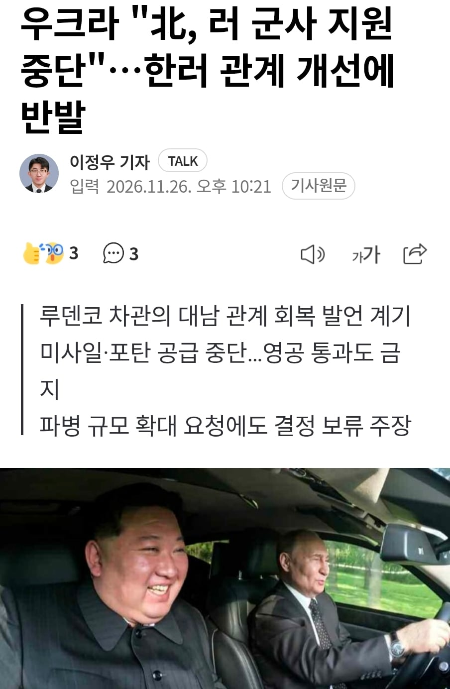
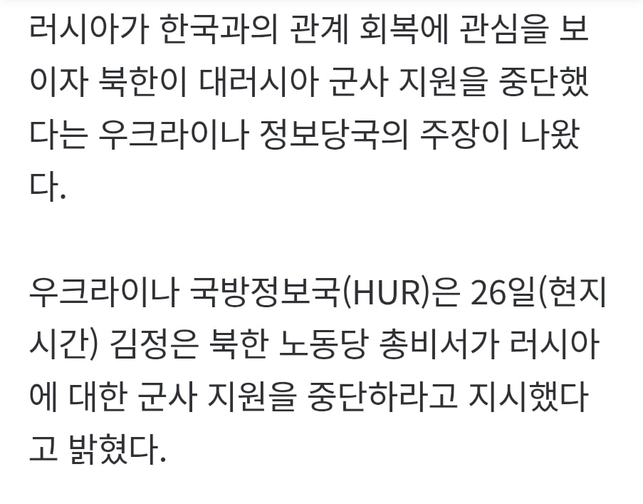
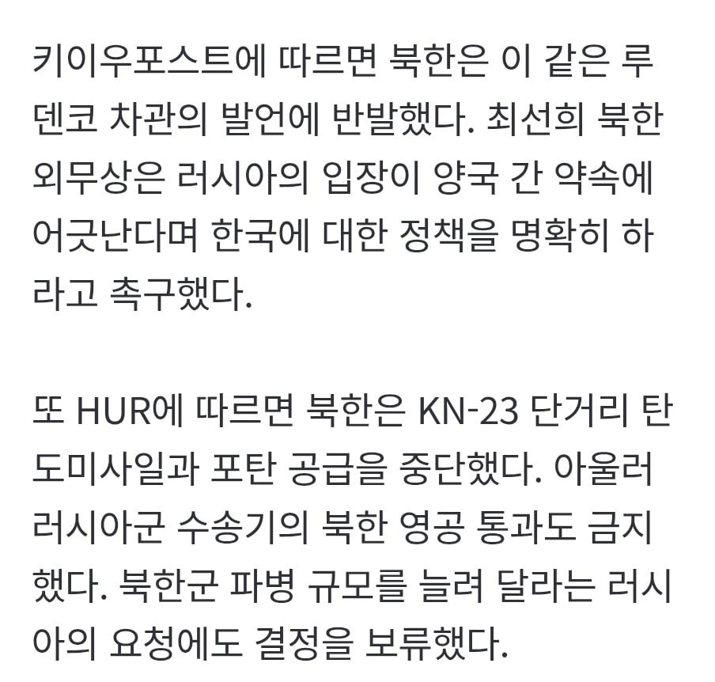

한국이 러시아와 사이 좋으면 북한이 고립되니까
너희한테도 좋은거지?



한국이 러시아와 사이 좋으면 북한이 고립되니까
너희한테도 좋은거지?
ㄹㅇ 걍 티베킹 같은데
티베깅을 구분할 지능이면 러뽕 안 하죠
야야 봤지?
이정도면 된거야?
그니까 계속 보내줄꺼지?
순서가 저렇게 되서 군사지원받을라고 전투기온거같긴함
구제불능 러포티 새끼
러괴 새끼들이 핵폭격기로 울릉도 위협한지 사흘도 안 지났는데 러시아에 똥구멍까지 다 갖다 바치고 싶어서 안달이 났네
우크맘 ㅎㅇ
너 이번에 러시아가 핵폭격기로 울릉도 위협한 거 어떻게 생각함?
싱글벙글 뒤통수 게임
근데 러시아 입장에서 이건 명확함.
전쟁 중일 때는 북한을 이용해야 되지만
전쟁 끝나면 경제 재건을 위해서 우리나라의 도움을 반드시 받아야 됨.
올 여름부터 우크라이나가 드론 앞세워서 몇 달 동안 되찾은 땅이 많은데
(2025년엔 러시아가 우크라이나 땅 5000제곱킬로미터 이상 먹음)
(2026년엔 러시아가 10월까지 100제곱킬로미터 밖에 못 먹음. 그리고 최근 3개월은 잃기만 했음.).
이번 겨울 넘기면 내년 봄에 상황이 좀 달라질 수 있음.
유럽에서도 겨울 에너지 위기 넘기고 우크라이나 지원이 계속 유지되면
우크라이나가 드론 앞세워서 기세를 더 높일 수 있음.
거기에 크림대교도 끊어짐.
러시아 입장에서 전황이 더 악화되기 전에 내년 봄에 휴전할 수도 있음.
휴전하면 상황이 완전히 달라짐.
그리고 그 전부터 입질이 있어야 곧바로 도움을 구할 수 있음.
러시아 입장에서는 우리나라로부터 협력 약속을 잡는 대신에
휴전 때까지 북한의 지원도 구해야 되기 때문에
생색내기로 쑈를 보여줘야 함.
울릉도 근해 근접 비행은
그런 배경에서 나왔을 가능성이 적지 않게 있음.
"정은아 봤제? 저 남조선 놈들에게 우리 함 본때를 보여 줬다~ 그러니까 병력 빼지 말고 기다려 줘~ 휴전 때까지~"
이거일 가능성 큼.
방공식별구역이 영공도 아니고 허벌인데 그까이꺼 그냥 할말있으면 들락날락하는거지 뭐
뭔소리냐 이번에 울릉도 북방 영공 1해리 앞까지 왔다갔다
그래 1해리 앞이잖아. 영공이 아니고
러시아가 이번에 도발한 울릉도 접근이 북한 달래기용 wwe 일수도 있단거네 ㅋㅋㅋㅋㅋ
러시아랑 우리나라 관계가 개선되고 있었어?
그딴거 없고 한국의 일방적 짝사랑임.
상식적으로 북한 드론기술이 전부 러시아에서 온건데 적국에 드론퍼줘놓고 관계개선하자! 한마디로 퉁칠수있을줄알았음?
관계개선하고 싶으면 북한드론전력 전쟁이전으로 되돌려놔
좆같이 굴질 말던가
북한은 꽉 붙잡고 있을테니 마음껏 싸우거라
다 떠나서 "北 러 군사 지원 중단"이라는 단어가 존나 어지럽네 새삼...
볼로디미르 젤렌스키 우크라이나 대통령은 2027년 전쟁 대응과 국가 운영을 위해 1150억 유로(약 168조원) 규모의 외부 재정 지원이 필요하다고 밝혔다. 러시아와의 전쟁이 장기화하면서 우크라이나 재정 부담이 가중되는 모양새다.
우크라이나 주장 음 ㅋ
우크라에서 쌉소리 하는것 같은데 ㅋㅋㅋ
북한한테 손벌리고 빌빌거려야하는 러시아 꼬라지 재밌네ㅋㅋㅋㅋㅋ
러시아를 빠는 좆장애년은 뭐징..
한국 정부, 기업이 전후 러시아에 들어가서 사업하고 싶어 안달난건 비밀도 아니다
러시아 쇄빙선 없으면 통행도 못하는 북극항로 미래 먹거리라고 홍보하는데 ㅋㅋ
러뽕새끼들이 진짜 있네
러시아 호감이긴함
방공식별구역만 들어오고 영공에 안들어오는이유?
국제법상 문제는 전혀 없지만
상대방을 긁을수 있다.
긁히지 마라. 긁히는게 상대방의 의도다
북한 대러제재에 러시아 화들짝 이 무슨..
큰일났다 러뽕들 영해침범에 정훈교육 들어갔노
코인해킹이 사람장사보다 달달한가 봐
러시아가 막 도시락 초코파이 한류뽕맞고 한국을 너무 사랑해서 우리만 특별대우 해준다고 믿는 정신병자들 많음 ㅋㅋㅋ
러시아 전투기가 울릉도 근처 비행해서 대피문자 날린지 얼마나 됐다고 뭔 관계 개선이야..